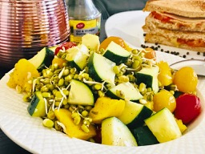

                                    <figure class="recipePage">                                        
                                        <figcaption class="caption">
                                        
                                            <!--  Copy your recipie in here -->
                                            <h1><span style="color: #008000;"><strong>Sprouted Mung Bean Salad</strong></span></h1>
<p><strong>Ingredients</strong></p>
<ul>
<li>Mung beans 1 cup</li>
<li>Ripe Mango 1 cubed</li>
<li>Cucumber 1 cubed</li>
<li>Cherry tomatoes a few</li>
</ul>
<p><strong>For Dressing</strong></p>
<ul>
<li>Olive oil 1 tbsp</li>
<li>Lemon juice 2 tbsp</li>
<li>Garlic finely shredded 1 tsp</li>
<li>Salt &amp; Pepper as required</li>
</ul>
<p><strong>Method</strong></p>
<p>Wash mung beans till the water runs clear and soak overnight. Discard water, wash again and drain water completely. Keep the beans in a bowl or jar and cover with a mesh cloth. Store in a dark place. May take couple of days to sprout.</p>
<p>In a salad mixing bowl combine sprouted beans, mango, cucumber, and cherry tomatoes.</p>
<p>In a small bowl whisk together, the ingredients for dressing. Pour over the salad and toss.</p>
<p>If you are a cheese fan add goat cheese or any cheese of your choice just before serving.</p>
<p>&nbsp;</p>
<p>PS: Sprouted beans can be lightly steamed if you dont like it raw.</p>
<p>&nbsp;</p>

                                            <!-- Copy Up to here-->

                                        </figcaption>
                                       
                                    </figure>
                                  